Point numéro un : Etat de la circulation.
Les voies terrestres sont réservées aux véhicules de service, au véhicules en commun et prioritaires, seuls les trajets courts sont autorisés au sol c'est à dire inférieurs à 5 km.
N'oubliez pas de signaler votre descente dans les couloirs ascendants via vos commandes de bord.
Point numéro deux : Conditions météorologiques.
Les conditions se sont dégradées cette semaine. Une probabilité de pluies acides est attendue à 54% de risque dans la journée.
Pour ceux voyageant en dehors du bouclier de la ville veillez à vérifier l'état de vos boucliers.
Enfin une tempête électromagnétique pourrait éclater dans la soirée. Le trajet est déconseilllé après 21h.
Point numéro trois : Transports en communs.
N'oubliez pas qu'ils sont accessibles a tout humanoïde gratuitement. Si un quelconque problème vous empêche d'accéder à votre véhicule personnel ils sont a votre disposition.
Pour rappel, les capteurs biométriques automatisés vont empêcheront de conduire si votre niveau de consommation de spiritueux est non conforme à la limite estimée pour votre taille, age, poids, et race.
Rappel : faites attention en empruntant les couloirs ascendants, les IAs intégrées aux véhicules ne couvrent pas les calculs des manoeuvres rapides.
 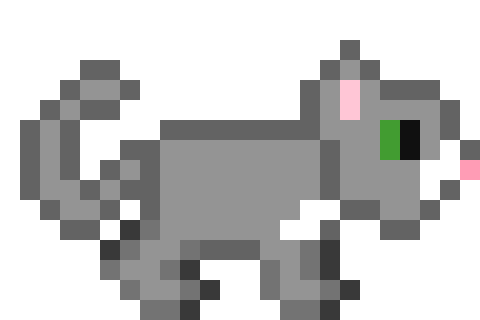
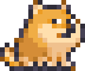
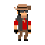
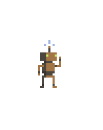
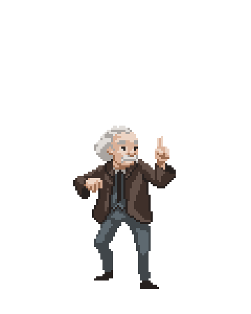
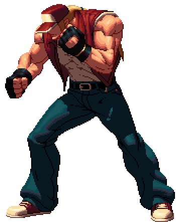
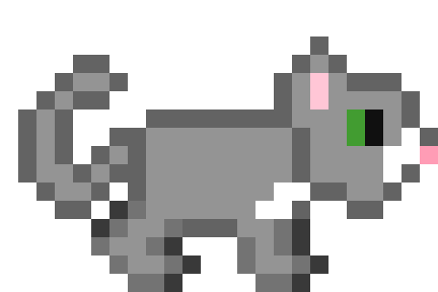
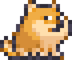
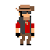
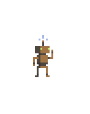
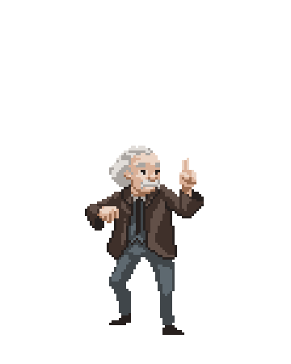
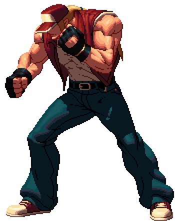
 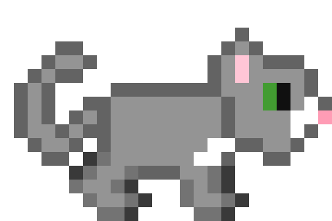
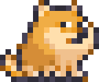
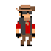
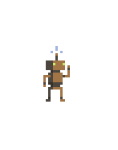
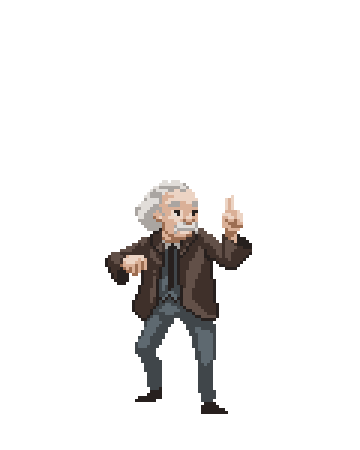
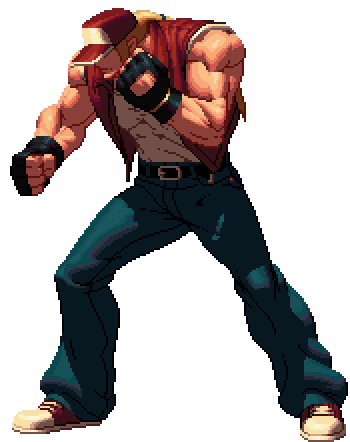
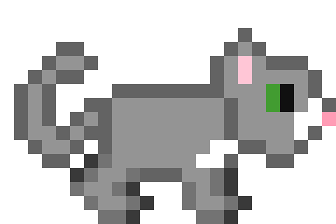
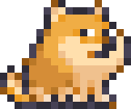
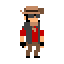
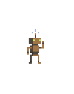
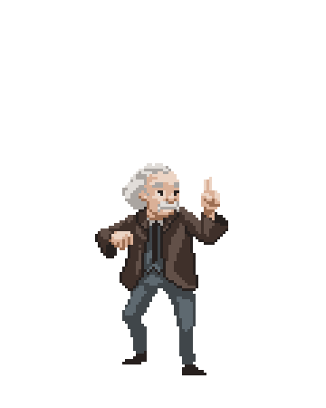
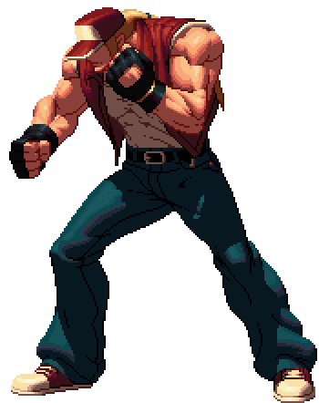